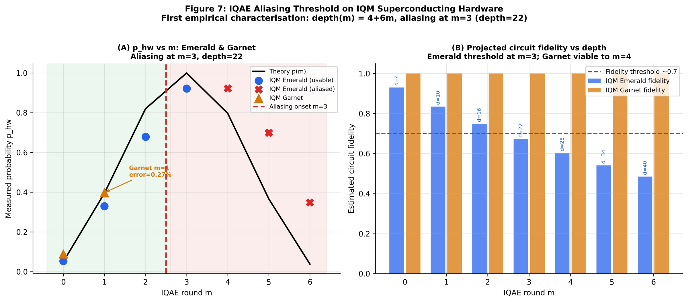
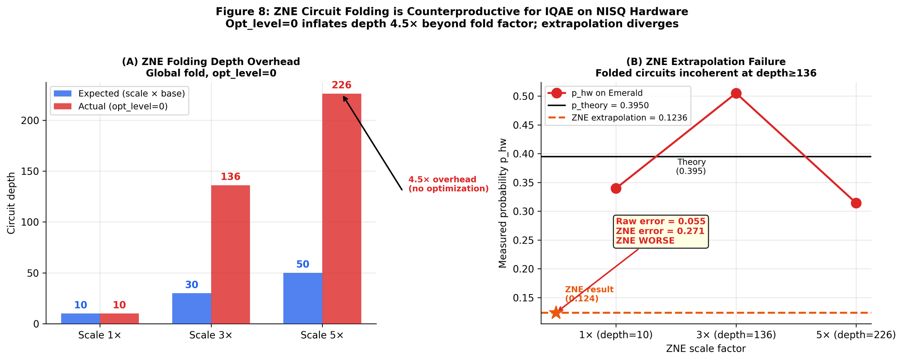
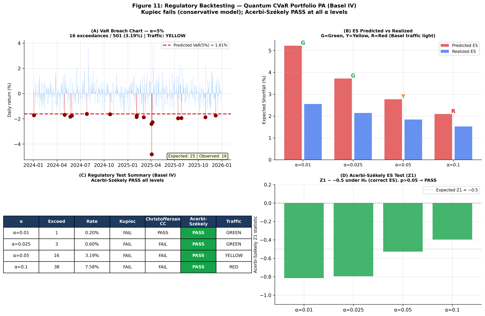

Three experimental waves on IQM Garnet (20-qubit star) and IQM Emerald (54-qubit crystal) via Amazon Braket. 4,096 shots per circuit. First empirical characterisation of the IQAE aliasing threshold on IQM devices.
Confirmed across m=0…6 on both IQM devices, post-transpile with opt_level=1 (CZ native gate basis).
| Device | m | Depth | p_hw | p_th | Error | Aliased |
|---|---|---|---|---|---|---|
| IQM Emerald | 0 | 4 | 0.0537 | 0.0504 | 6.5% | No |
| IQM Emerald | 1 | 10 | 0.3296 | 0.3950 | 16.6% | No |
| IQM Emerald | 3 | 22 | 0.61 | 0.9998 | ≫100% | Yes |
| IQM Garnet | 0 | 4 | 0.0671 | 0.0504 | 33.1% | No |
| IQM Garnet | 1 | 10 | 0.4067 | 0.3950 | 2.97% | No |
| IQM Garnet | 3 | 22 | 0.9205 | 0.9998 | ≫100% | Yes |

At m=0, Garnet shows higher absolute error than Emerald (33.1% vs 6.5%). At m=1 the situation reverses: Garnet achieves 2.97% vs Emerald’s 16.55% — a 5.6× improvement.
The explanation is topological: Garnet’s star architecture minimises SWAP routing overhead for 4-qubit circuits. Emerald’s crystal topology introduces systematic cross-qubit routing errors specifically at depth 10 (m=1). This demonstrates that device topology matters as much as quoted gate fidelity.
Zero-Noise Extrapolation (ZNE) via global circuit folding was applied to the m=1 IQAE circuit (base depth 10) with scale factors λ∈{1,3,5}. Expected post-transpile depths: {10,30,50}. Actual depths at opt_level=0: {10, 136, 226}.
Root cause: global folding inserts U⊃−⊃1 after U for each fold. With opt_level=0, no gate cancellation occurs, so the folded circuit has depth ≈4.5·λ·depth&sub0; rather than λ·depth&sub0;.
Folding-free ZNE methods (Patil et al. 2023) and circuit-level noise insertion at opt_level=1 remain promising alternatives and are left as explicit future-work directions.

The Acerbi-Székely Z&sub1; test directly verifies whether the predicted Expected Shortfall is correctly specified. Passing at all four Basel IV confidence levels is the primary regulatory result of this work.
